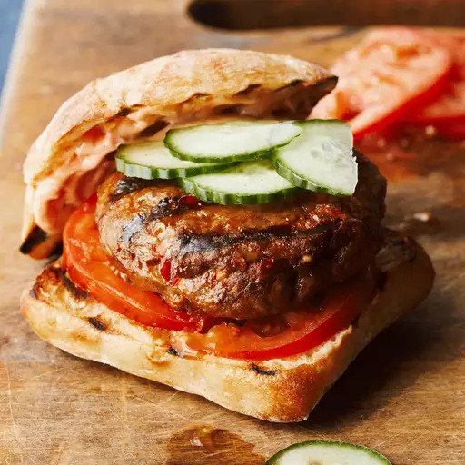

Lamb Merguez Sausage Patty Burger

Description:
Chef John transforms homemade Merguez, the spicy North African sausage, into an excellent burger! He mixes ground lamb with a quick spice blend, garlic, spicy harissa chili sauce, and tomato paste. Top of your grilled burger with feta cheese!
Merguez sausage is not commonly stocked at the grocery store, so I decided to come up with an easy home version.
Ingredients:
- 1 teaspoon salt
- 1/4 teaspoon fennel seeds
- 1 teaspoon ground cumin
- 1/2 teaspoon ground cinnamon
- 1/2 teaspoon ground coriander
- 1/4 teaspoon ground turmeric
- 3 cloves garlic (peeled)
- 2 tablespoons of harissa, or to taste
- 1 tablespoon tomato paste
- 1 pound lean ground lamb
- 1 table spoon olive oil
Steps:
- Combine salt and fennel seeds in a mortar and pestle and pound until fine. Stir cumin, cinnamon, coriander, turmeric, and garlic cloves into the salt mixture and continue grinding to form a thick paste. Stir in harissa sauce and tomato paste until combined.
- Combine ground lamb and the spice paste together with a fork in a large bowl. Cover and refrigerate 8 hours to overnight.
- Form sausage into patties. Heat olive oil in a large skillet over medium-high heat. Cook patties until no longer pink inside, 5 to 8 minutes per side, depending on the size of the patties.